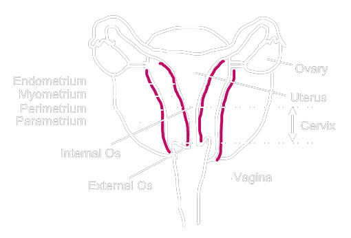

| Point Source Rule of Thumb |
When the linear distance between the source and the measuring device ≥ 5 × the size of the measuring device |
||||||||||||||||
| Dosimetric System |
= Protocol defining
→ applicators type and number
→ tx duration → dose → incorporation with EXBT ? → irradiation areas Manchester System

ICRU System
dose to volume instead of a point
Antique Systems (e.g. Paris System)
|
||||||||||||||||
| AAPM TG-43 |
Factors Considered
Not Considering
Why need TG-43
Dosimetry Formalism \[ \dot{D}(r, \theta) = S_K ~\Lambda ~\frac{G_L(r, \theta)}{G_L(r_0, \theta_0)} ~g_L(r) ~F(r, \theta) \]
where (on longitudinal plane)
r0 = 1cm away from seed centre
θ = 90° P(r, θ) = target point r = distance from seed centre to target point θ = angle from z axis CCW to target point 5 Components * the 3 highlighted components are provided by supplier
|
||||||||||||||||
| Source Strength |
Source strength is qualified by Exposure Rate. How do we obtain Exposure Rate?
|
||||||||||||||||
| Dosimetry System | e.g. Paris system |